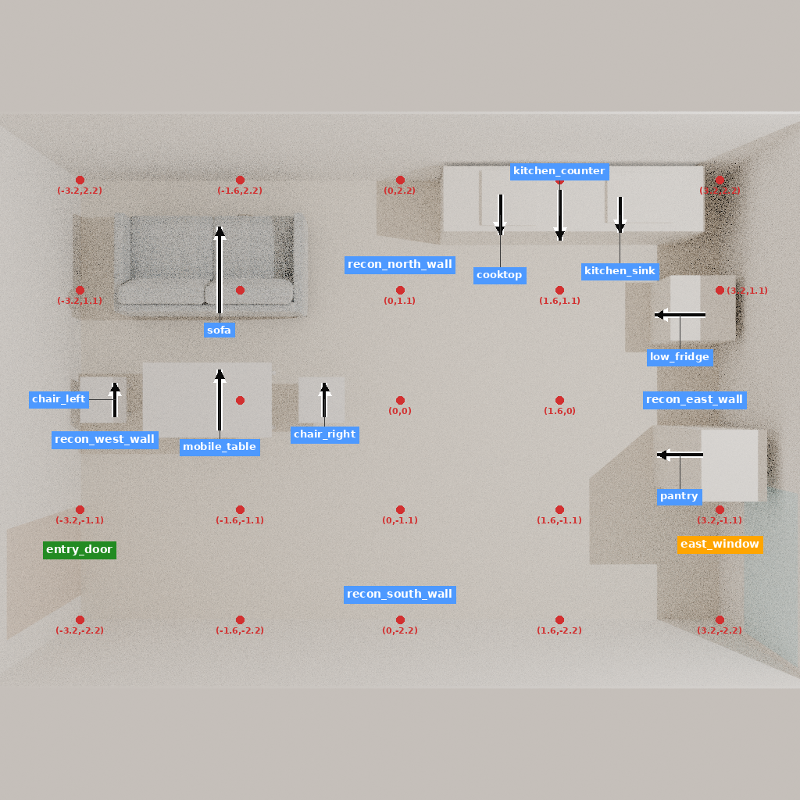

核查日期：2026-11-10。本报告形成时，远端 runs/autodl 为 27fa5bce8797697c8bc29d6686664a0715c52563，runs/920 为 75fc783f86d4fea78714639e110fbe77476ee106，main 为 531bd1a207fa8e80371859b486f5efd25a096dd3。下述观察恢复文件当时仍是本地未提交内容，不能说成已发布到 Git。本次进度复核没有启动模型、训练、付费 API 或新场景生成。
| 记录 | 可确认结果 | 解释边界 |
|---|---|---|
| STOPDATA | 动作组和判断＋动作组各完成 8 次参数更新，各 144 个适配器张量发生变化。 | 小型训练真实执行；不能由损失或参数变化推出三维收益。 |
| EVALFIX | 每组 4 条轨迹，活动检查：同知识基座 3/4，动作组 2/4，判断＋动作组 2/4。改善且不产生新损失，各组均 0/4。 | 同一项目、两项任务、两个种子，不是 12 个独立房间；完整房间成功均未知。 |
| MATCHEDROLL | 已满足状态中，判断组正确停止并保持要求 2/2，另两组各 1/2。缺陷状态中，各组修复均 0/2。 | 只有一个训练中出现过的项目。全部 6 条缺陷轨迹合计 18 次模型调用、13 次理由块未闭合错误、0 次原生工具调用。尚不能测出这些轨迹的空间修改能力。 |
| LEARN | 最后发布状态为 11 月 8 日启动训练，记录 completed=0、planned=16。 | 当前 Git 目录没有最终训练完成回执；不据旧状态推断另一台机器现在仍在运行。 |
恢复的 Paper 开发房间保留 15 个对象记录，其中 9 件家具。使用原生 HouseScene、Drake 和 Blender 导出，再实际生成一张俯视图、四张侧视图，完成标签映射和模型 processor 编码。它是研究者重建开发房间的回放，包含已声明的代理对象；不是从新描述生成的场景，也不是独立用户偏好数据。
| 阶段 | 实际记录 | 时间与资源 |
|---|---|---|
| 原生导出 | 10,408,496 字节 blend；原输入不变 | 约 24.38 秒；仅父进程峰值 RSS 597000 KiB |
| 首次五视图 | 已渲染，发现发布源码与原检查点标签、取景配置不同；保留诊断输出 | 约 218.77 秒；不是最终输入版本 |
| 检查点版本五视图 | 恢复四个源码文件，SHA256 均与原检查点一致；五视图成功 | 包装流程 238.49 秒；采样进程树峰值 RSS 628,621,312 字节 |
| 原生标签与编码 | 标签约 5.43 秒；真实 processor 编码约 16.98 秒；两组图像张量一致，无教师答案输入 | 编码进程峰值 RSS 860128 KiB；无大模型前向、无参数更新 |
原生导出、首轮渲染、恢复版本渲染均属已经保存的执行记录；本次核查读取回执并重算关键源码和最终俯视图哈希，没有重复运行这些阶段。不同阶段的 RSS 口径不同，不能直接相加或据此估计完整生成峰值。
输入版本尚不能与历史材料混用。四个源码文件一致不代表图片像素一致：可取得的旧俯视图与新图 RGB 不完全相同，平均通道绝对差约 0.6805/255；旧四侧图只有哈希，不能做像素比较。新运行状态还增加 45 个可见字段，包含对象描述、支撑元数据和尺度。没有删除这些差异来宣称等价。原 24 个单元中，完整原图或已证等价观察仍是 9 个；本次新增的是一套单独版本的可运行观察。
四文件检查点匹配 · 原生导出回执 · 渲染回执（标注前） · 最终标注回执 · 编码、输入差异及像素比较

当前可检验的问题是：在相同设计知识、场景观察和训练监督下，动作显式依据模型自己生成的空间判断，能否比同样学习判断、但直接输出动作，更好地完成房间要求？代码已经将两者分开：辅助判断监督与判断条件下的动作监督。两者使用常规交叉熵；尚没有这组新对照的真实模型效果。
理由作为额外训练监督已有 Distilling Step-by-Step；三维场景观察—思考—动作监督已有 Scene-Designer。本次定向读取相关摘要、方法与现有本地实现，不声称完整领域排重。“先判断再行动”、分阶段调用和格式修复本身不足以成为新贡献。
数据也还很小：24 个监督单元、6 个来源家族，只有 10 个判断目标（8 个原则应用和 2 个停止目标），14 个没有判断目标。原则与来源高度绑定，全部属于开发材料。旧动作训练与判断＋动作训练的监督材料并非天然等量，不能将其结果当作已完成的同监督比较。
目前继续的理由是已有可执行基础和可定位失败，不是已建立算法优势。本次不请求开启 GPU；下一次资源使用应服务于已固定输入和强对照的实际执行，而不是继续增加接口检查。
清理记录：两份旧 zip 的 100 个成员与已提取原件一致；另一份归档的 53 个成员已存在，唯一清单另存后才删除归档。实测共释放 71,860,224 字节，154 个成员内容保留。未删除所需模型、唯一资产或旧实验结果。清理收据一 · 清理收据二。这些是本轮此前已完成的操作，本次核查未再次删除文件。